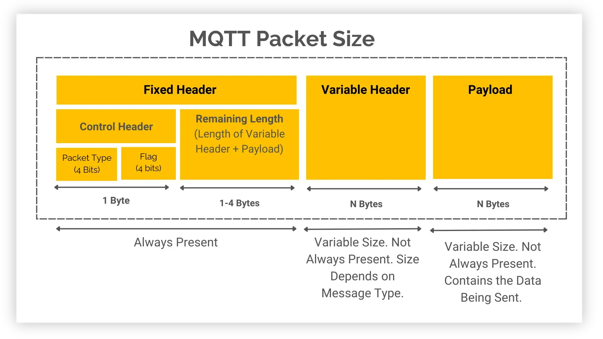
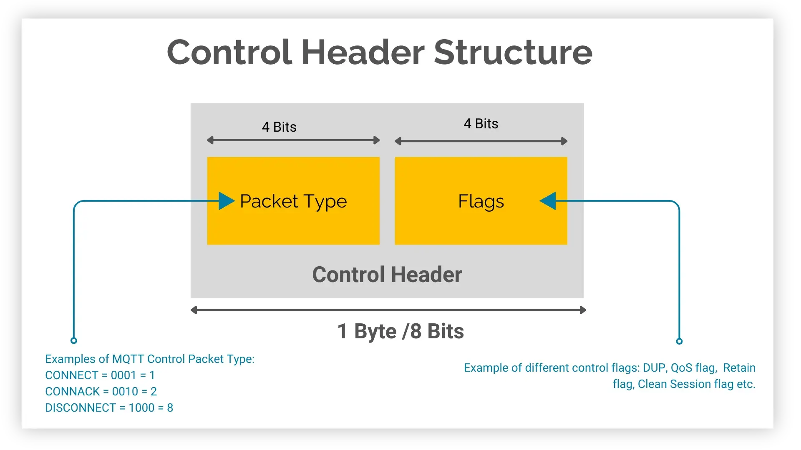
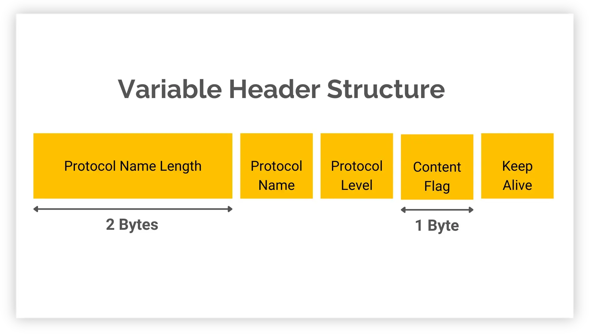

[1]主要包含三部分：
1. 固定头（Fixed Header）
1. 控制字段（Control Field）
1. 报文类型（Packet Type，第 1 字节高 4 位）
2. 标志位（Flags，第 1 字节低 4 位）
2. 剩余长度（Remaining Length，可变字节整数编码）
2. 可变头（Variable Header）：内容随报文类型而定，如报文标识符、主题名、属性。
3. 载荷（Payload）：内容随报文类型而定，如消息内容、客户端 ID。

[1]| Name | Value | Direction of flow | Description |
|---|---|---|---|
| Reserved | 0 | Forbidden | Reserved |
| CONNECT | 1 | Client to Server | Connection request |
| CONNACK | 2 | Server to Client | Connect acknowledgment |
| PUBLISH | 3 | Client to Server or Server to Client |
Publish message |
| PUBACK | 4 | Client to Server or Server to Client |
Publish acknowledgment (QoS 1) |
| PUBREC | 5 | Client to Server or Server to Client |
Publish received (QoS 2 delivery part 1) |
| PUBREL | 6 | Client to Server or Server to Client |
Publish release (QoS 2 delivery part 2) |
| PUBCOMP | 7 | Client to Server or Server to Client |
Publish complete (QoS 2 delivery part 3) |
| SUBSCRIBE | 8 | Client to Server | Subscribe request |
| SUBACK | 9 | Server to Client | Subscribe acknowledgment |
| UNSUBSCRIBE | 10 | Client to Server | Unsubscribe request |
| UNSUBACK | 11 | Server to Client | Unsubscribe acknowledgment |
| PINGREQ | 12 | Client to Server | PING request |
| PINGRESP | 13 | Server to Client | PING response |
| DISCONNECT | 14 | Client to Server or Server to Client |
Disconnect notification |
| AUTH | 15 | Client to Server or Server to Client | Authentication exchange |
| ### 标志位（Flags） |
Flags 只有 PUBLISH 用到，其他报文都填固定值。
| MQTT Control Packet | Fixed Header flags | Bit 3 | Bit 2 | Bit 1 | Bit 0 |
|---|---|---|---|---|---|
| CONNECT | Reserved | 0 | 0 | 0 | 0 |
| CONNACK | Reserved | 0 | 0 | 0 | 0 |
| PUBLISH | Used in MQTT v5.0 | DUP | QoS (this & next bit) | RETAIN | |
| PUBACK | Reserved | 0 | 0 | 0 | 0 |
| PUBREC | Reserved | 0 | 0 | 0 | 0 |
| PUBREL | Reserved | 0 | 0 | 1 | 0 |
| PUBCOMP | Reserved | 0 | 0 | 0 | 0 |
| SUBSCRIBE | Reserved | 0 | 0 | 1 | 0 |
| SUBACK | Reserved | 0 | 0 | 0 | 0 |
| UNSUBSCRIBE | Reserved | 0 | 0 | 1 | 0 |
| UNSUBACK | Reserved | 0 | 0 | 0 | 0 |
| PINGREQ | Reserved | 0 | 0 | 0 | 0 |
| PINGRESP | Reserved | 0 | 0 | 0 | 0 |
| DISCONNECT | Reserved | 0 | 0 | 0 | 0 |
| AUTH | Reserved | 0 | 0 | 0 | 0 |
| * 详细内容可以看 section 3.3.1 | |||||
| * DUP = Duplicate delivery of a PUBLISH packet | |||||
| * QoS = PUBLISH Quality of Service | |||||
| * RETAIN = PUBLISH retained message flag |
标准这里写的很罗嗦，其实就是，后两部分的长度和：
剩余长度 = 这条报文里，固定头之后所有字节的数量。

[1]可变头就像每种报文的“专属表格”：类型一定，该填哪几栏、每栏填什么就都定了，换一种报文换一张表。
“报文标识符字段”是 MQTT 报文可变头里的一个 2 字节整数，用来把“请求”和“对应的确认”配对。
* 有报文标识符：PUBLISH（QoS > 0）、PUBACK、PUBREC、PUBREL、PUBCOMP、SUBSCRIBE、SUBACK、UNSUBSCRIBE、UNSUBACK
* 无报文标识符：CONNECT、CONNACK、PINGREQ、PINGRESP、DISCONNECT、AUTH
报文标识符的分配与回收规则。拆成四条：
1. 什么时候必须有：PUBLISH 在 QoS > 0 时必须带；QoS 0 时不得带。客户端发 SUBSCRIBE、UNSUBSCRIBE、PUBLISH（QoS > 0）时，必须分配一个当前未使用的非零标识符。服务器发 PUBLISH（QoS > 0）也一样。
2. 什么时候可以回收：发送方处理完对应的确认报文后，这个标识符才能再次使用。QoS 1 的 PUBLISH 对应 PUBACK；QoS 2 的 PUBLISH 对应 PUBCOMP，或者原因码 ≥ 128 的 PUBREC；SUBSCRIBE / UNSUBSCRIBE 分别对应 SUBACK / UNSUBACK。
3. 谁和谁共享一套：PUBLISH、SUBSCRIBE、UNSUBSCRIBE 用的是同一个池子，但客户端和服务器各自独立维护自己的池子。所以同一时刻，一个标识符不能被同一个发送方的两条命令同时占用，但客户端用 0x1234 和服务器用 0x1234 互不影响。
4. 确认报文必须回同一个号：PUBACK / PUBREC / PUBREL / PUBCOMP 必须带上原 PUBLISH 的标识符；SUBACK / UNSUBACK 必须带上原 SUBSCRIBE / UNSUBSCRIBE 的标识符。
属性系统是 MQTT5 新增的内容。
一、属性放在哪
CONNECT、CONNACK、PUBLISH、PUBACK、PUBREC、PUBREL、PUBCOMP、SUBSCRIBE、SUBACK、UNSUBSCRIBE、UNSUBACK、DISCONNECT、AUTH 这 13 种报文的可变头最后一个字段是属性集合。CONNECT 的载荷里还有一组 Will Properties（遗嘱属性），结构相同。
二、属性集合长什么样
三、下面的大表。
表里每一行是一个属性的定义：十进制编号、十六进制编号、名称、值类型、能出现在哪些报文里。比如 0x11 是 Session Expiry Interval，四字节整数，只能出现在 CONNECT、CONNACK、DISCONNECT；0x23 是 Topic Alias，两字节整数，只能出现在 PUBLISH。
| Identifier | Name (usage) | Type | Packet / Will Properties | |
|---|---|---|---|---|
| Dec | Hex | |||
| 2 | 0x02 | Message Expiry Interval | Four Byte Integer | PUBLISH, Will Properties |
| 3 | 0x03 | Content Type | UTF-8 Encoded String | PUBLISH, Will Properties |
| 8 | 0x08 | Response Topic | UTF-8 Encoded String | PUBLISH, Will Properties |
| 9 | 0x09 | Correlation Data | Binary Data | PUBLISH, Will Properties |
| 11 | 0x0B | Subscription Identifier | Variable Byte Integer | PUBLISH, SUBSCRIBE |
| 17 | 0x11 | Session Expiry Interval | Four Byte Integer | CONNECT, CONNACK, DISCONNECT |
| 18 | 0x12 | Assigned Client Identifier | UTF-8 Encoded String | CONNACK |
| 19 | 0x13 | Server Keep Alive | Two Byte Integer | CONNACK |
| 21 | 0x15 | Authentication Method | UTF-8 Encoded String | CONNECT, CONNACK, AUTH |
| 22 | 0x16 | Authentication Data | Binary Data | CONNECT, CONNACK, AUTH |
| 23 | 0x17 | Request Problem Information | Byte | CONNECT |
| 24 | 0x18 | Will Delay Interval | Four Byte Integer | Will Properties |
| 25 | 0x19 | Request Response Information | Byte | CONNECT |
| 26 | 0x1A | Response Information | UTF-8 Encoded String | CONNACK |
| 28 | 0x1C | Server Reference | UTF-8 Encoded String | CONNACK, DISCONNECT |
| 31 | 0x1F | Reason String | UTF-8 Encoded String | CONNACK, PUBACK, PUBREC, PUBREL, PUBCOMP, SUBACK, UNSUBACK, DISCONNECT, AUTH |
| 33 | 0x21 | Receive Maximum | Two Byte Integer | CONNECT, CONNACK |
| 34 | 0x22 | Topic Alias Maximum | Two Byte Integer | CONNECT, CONNACK |
| 35 | 0x23 | Topic Alias | Two Byte Integer | PUBLISH |
| 36 | 0x24 | Maximum QoS | Byte | CONNACK |
| 37 | 0x25 | Retain Available | Byte | CONNACK |
| 38 | 0x26 | User Property | UTF-8 String Pair | CONNECT, CONNACK, PUBLISH, Will Properties, PUBACK, PUBREC, PUBREL, PUBCOMP, SUBSCRIBE, SUBACK, UNSUBSCRIBE, UNSUBACK, DISCONNECT, AUTH |
| 39 | 0x27 | Maximum Packet Size | Four Byte Integer | CONNECT, CONNACK |
| 40 | 0x28 | Wildcard Subscription Available | Byte | CONNACK |
| 41 | 0x29 | Subscription Identifier Available | Byte | CONNACK |
| 42 | 0x2A | Shared Subscription Available | Byte | CONNACK |
| ## 载荷（Payload） |
一些 MQTT 控制包包含一个有效载荷作为包的最后部分。
必需：CONNECT、SUBSCRIBE、SUBACK、UNSUBSCRIBE、UNSUBACK
可选：PUBLISH
无：CONNACK、PUBACK、PUBREC、PUBREL、PUBCOMP、PINGREQ、PINGRESP、DISCONNECT、AUTH
原因码（Reason Code）：1 字节无符号值，表示操作结果。
带原因码的报文分两种放法：
| Reason Code | Name | Packets | |
|---|---|---|---|
| Decimal | Hex | ||
| 0 | 0x00 | Normal disconnection | DISCONNECT |
| 0 | 0x00 | Granted QoS 0 | SUBACK |
| 1 | 0x01 | Granted QoS 1 | SUBACK |
| 2 | 0x02 | Granted QoS 2 | SUBACK |
| 4 | 0x04 | Disconnect with Will Message | DISCONNECT |
| 16 | 0x10 | No matching subscribers | PUBACK, PUBREC |
| 17 | 0x11 | No subscription existed | UNSUBACK |
| 24 | 0x18 | Continue authentication | AUTH |
| 25 | 0x19 | Re-authenticate | AUTH |
| 128 | 0x80 | Unspecified error | CONNACK, PUBACK, PUBREC, SUBACK, UNSUBACK, DISCONNECT |
| 129 | 0x81 | Malformed Packet | CONNACK, DISCONNECT |
| 130 | 0x82 | Protocol Error | CONNACK, DISCONNECT |
| 131 | 0x83 | Implementation specific error | CONNACK, PUBACK, PUBREC, SUBACK, UNSUBACK, DISCONNECT |
| 132 | 0x84 | Unsupported Protocol Version | CONNACK |
| 133 | 0x85 | Client Identifier not valid | CONNACK |
| 134 | 0x86 | Bad User Name or Password | CONNACK |
| 135 | 0x87 | Not authorized | CONNACK, PUBACK, PUBREC, SUBACK, UNSUBACK, DISCONNECT |
| 136 | 0x88 | Server unavailable | CONNACK |
| 137 | 0x89 | Server busy | CONNACK, DISCONNECT |
| 138 | 0x8A | Banned | CONNACK |
| 139 | 0x8B | Server shutting down | DISCONNECT |
| 140 | 0x8C | Bad authentication method | CONNACK, DISCONNECT |
| 141 | 0x8D | Keep Alive timeout | DISCONNECT |
| 142 | 0x8E | Session taken over | DISCONNECT |
| 143 | 0x8F | Topic Filter invalid | SUBACK, UNSUBACK, DISCONNECT |
| 144 | 0x90 | Topic Name invalid | CONNACK, PUBACK, PUBREC, DISCONNECT |
| 145 | 0x91 | Packet Identifier in use | PUBACK, PUBREC, SUBACK, UNSUBACK |
| 146 | 0x92 | Packet Identifier not found | PUBREL, PUBCOMP |
| 147 | 0x93 | Receive Maximum exceeded | DISCONNECT |
| 148 | 0x94 | Topic Alias invalid | DISCONNECT |
| 149 | 0x95 | Packet too large | CONNACK, DISCONNECT |
| 150 | 0x96 | Message rate too high | DISCONNECT |
| 151 | 0x97 | Quota exceeded | CONNACK, PUBACK, PUBREC, SUBACK, DISCONNECT |
| 152 | 0x98 | Administrative action | DISCONNECT |
| 153 | 0x99 | Payload format invalid | CONNACK, PUBACK, PUBREC, DISCONNECT |
| 154 | 0x9A | Retain not supported | CONNACK, DISCONNECT |
| 155 | 0x9B | QoS not supported | CONNACK, DISCONNECT |
| 156 | 0x9C | Use another server | CONNACK, DISCONNECT |
| 157 | 0x9D | Server moved | CONNACK, DISCONNECT |
| 158 | 0x9E | Shared Subscriptions not supported | SUBACK, DISCONNECT |
| 159 | 0x9F | Connection rate exceeded | CONNACK, DISCONNECT |
| 160 | 0xA0 | Maximum connect time | DISCONNECT |
| 161 | 0xA1 | Subscription Identifiers not supported | SUBACK, DISCONNECT |
| 162 | 0xA2 | Wildcard Subscriptions not supported | SUBACK, DISCONNECT |